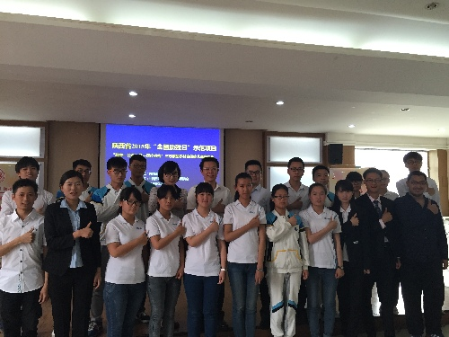

陕西青年志愿者在全国助残日期间广泛开展志愿助残阳光行动
桂电志愿者网 日期：2015-05-25 来源：
5月17日是第25个全国助残日。全省各级团组织、志愿服务组织以“心手相牵 共享阳光”为主题深入社区、特殊教育学校、参加人康复中心等残疾人较为集中区域，广泛开展内容丰富、形式多样的助残志愿服务活动，用行动弘扬人道主义精神，践行社会主义核心价值观。
5月17日上午，团省委副书记单舒平参加了由团省委主办，陕西科技大学承办的“关注孤独症儿童，走向美好未来”助残示范活动。活动中，陕西科技大学助残志愿服务组织负责人陈诗南首先介绍了救助农村自闭症儿童项目内容及整体工作开展情况，与会的自闭症儿童专家、大学生志愿者代表、受助儿童家长围绕本次助残日主题，认真分析孤独症儿童康复教育工作面临的重点和难点，研讨对策与措施。团省委副书记单舒平说，残疾人是需要特别关爱、特别需要关爱的特别群体，2015年全国助残日活动主题为“关注孤独症儿童，走向美好未来”，各级团组织和基层志愿服务团队要围绕孤独症儿童这一特殊而困难的群体整合资源关心、关爱本区域内的孤独症儿童。他指出，共青团开展助残志愿服务，既是优良传统的延续，也是服务大局的现实要求，要不断总结经验、摸清需求、扎实推进，完善“团队帮扶+结对接力”的服务模式，广泛宣传病理知识、普及科学理念，弘扬志愿精神、搭建帮扶平台，健全工作机制、力求工作实效。参加此次活动的还有来自紫阳县的4个自闭症儿童家庭，陕西冶金医院为他们提供免费的医疗救治，并为每个家庭捐款10000元。

在西安，陕西省各届“好青年”携爱心人士前往阎良区德瑞养老院开展敬老助残活动，50余名“好青年”为老人送去米、面、油及日常生活用品，和老人一对一进行沟通交流，了解老人们的身体状况、听取他们青年时代的奋斗故事，分享他们的人生阅历。残障志愿联盟“好青年”何沛表示，“好青年”会把“敬老助残”作为一项重要志愿服务内容，在社区和养老助残机构深入开展，在区域形成敬老助残的良好社会风尚，希望大家利用好身边的资源，广泛动员社会力量，助力陕西助残事业。
在铜川，团市委、市青联、市残联联合开展的铜川市青年志愿者助残阳光行动主题活动。来自全市各地的50余名助残青年志愿者现场为残疾人进行服务，通过互动做游戏、表演文艺节目等方式，让残疾人感受到来自社会的关心和温暖。团市委书记王维娟带领西安中医脑病医院专家、青年志愿者走访看望新区裕丰园、耀州区石柱镇等地的孤独症儿童，为他们送去精心准备的礼品和医疗服务。活动还邀请到著名青年相声演员、陕西省青联副主席苗阜担任铜川市青年志愿者助残阳光行动形象大使。
在安康，汉阴团县委举办了“感恩生命、梦想同行”杨佩励志演讲励志演讲会。被誉为“东方维纳斯”的平利无臂女孩杨佩以拼搏改变命运，用感恩回报社会，的事迹感动了在场的所有观众，自信的眼神、灿烂的微笑以及身上所迸发出来的不向命运低头的奋斗精神，为社会注入正能量，引导更多的残疾人找到生活的目标和意义。全县600余名机关干部、教师、医生、青年志愿者与学生共同聆听了她的励志经历。
在高校，长安大学经管学院大学生志愿者服务团的同学前往莲湖区千千爱特殊儿童培训中心开展了“用爱温暖‘星’灵”爱心活动。志愿者通过康复训练、益智游戏、心理疏导、文艺演出等方式开展持续性、周期性地帮扶，并对自闭症儿童的需求做专业分析和制定有针对性的帮扶方案。
在榆林，青少年社会工作者协会举办“陶之快乐，星之梦想”活动，春苗行动20余名义工赴绥德看望自闭症儿童，社工带去益智玩具，带领自闭症儿童开展群体性趣味活动，和他们一起制作泥陶，改善自闭症儿童在与人交流方面的能力，增进孩子们在音乐、文学、美术等方面的兴趣，培养他们在文化、行为方面的认知能力。
此外，宝鸡市、西安市新城区、渭南市临渭区等市（区），西安理工大学、西安科技大学等高校紧密围绕基层残疾人的迫切需求，组织广大志愿者深入到学校、社区、农村和残疾人家庭为残疾人提供常态化、规范化的志愿服务，不断推动我省助残志愿服务工作常态化、项目化、专业化发展。
【责任编辑：李博晶】